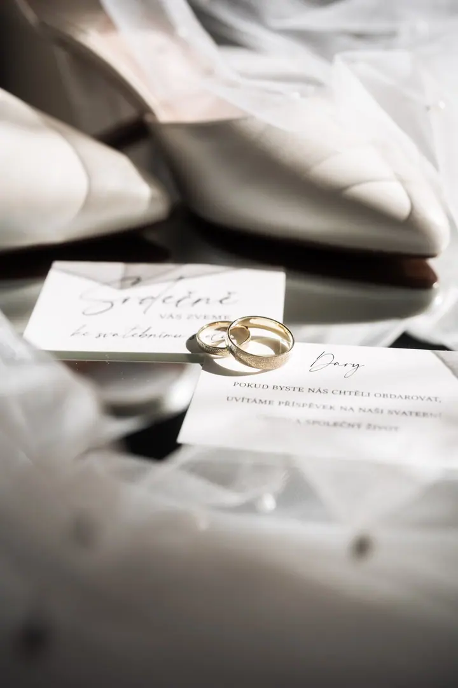
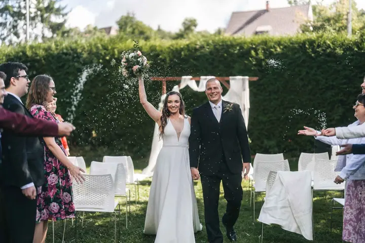
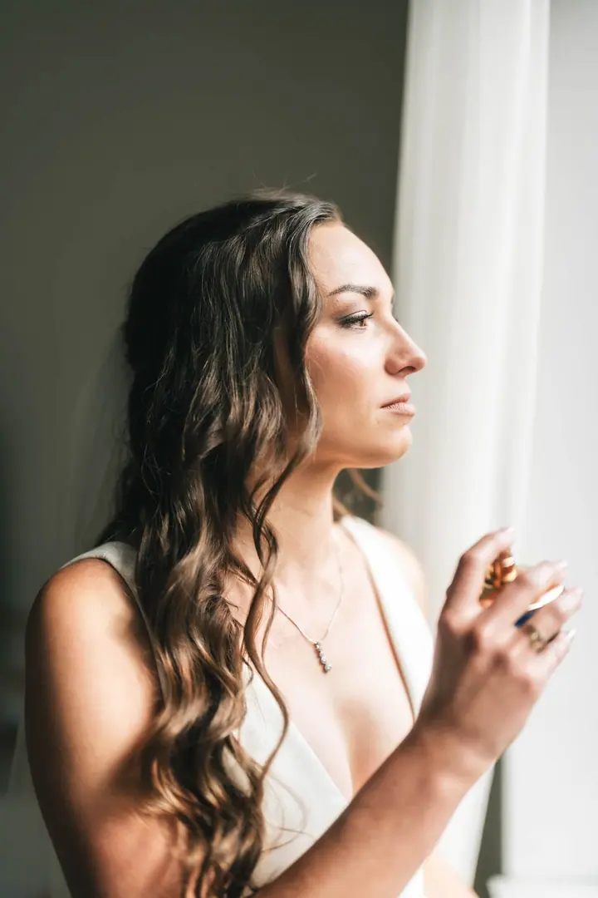

jedna
Svatební den
Jsem s vámi od ranních příprav po poslední prskavku. Nekoukám na hodinky a neodjíždím před hostinou.


Jmenuji se Martin Smolík a fotím svatby v Brně, na mé rodné Vysočině i kdekoli mezi tím. Místo pózování hledám přirozené momenty a skutečné emoce, a taky drobné detaily, které často vyprávějí nejsilnější příběhy.
Více o mně
Co fotím
jedna
Jsem s vámi od ranních příprav po poslední prskavku. Nekoukám na hodinky a neodjíždím před hostinou.
dvě
Před svatbou se spolu vyfotíme, poznáme se a zbavíte se trémy před objektivem. Ve svatební den už pak víte, co čekat.
Nekoukám na hodinky, jsem s vámi do poslední prskavky.


Za objektivem
Fotím už od roku 2012. Začínal jsem v přírodě a u sportu, postupně jsem se dostal k cestování, horolezecké fotografii a portrétům. Právě portréty mě nakonec přivedly ke svatbám, k příběhům, které mají opravdové emoce a atmosféru.
Ke každé svatbě přistupuji osobně a svůj styl přizpůsobuji vašim představám. Před svatbou se sejdeme nad harmonogramem, poradím vám, kdy je nejlepší světlo a jak den poskládat, abyste ho nemuseli prohonit.
Ve svatební den jsem s vámi celý den, od příprav po poslední prskavku. Fotky začínám upravovat hned po svatbě, dokud mám ten den v hlavě. Deset fotek máte do 48 hodin, celou galerii do dvou týdnů.
Martin
Pobavíme se o vaší představě svatebního dne. Rád vás poznám a pochopím, co od focení čekáte.
Domluvíme konkrétní termín a závazně ho zarezervujete zálohou 25 % z celkové ceny.
Sejdeme se osobně nebo online, projdeme detaily, vybereme lokace a poskládáme harmonogram tak, aby vám den nikam neutekl.
Jsem s vámi celý den. Deset fotek dostanete do 48 hodin, kompletní galerii do čtrnácti dnů a k tomu slideshow z toho nejlepšího.
Portfolio
Fotografie jsou ilustrační
Otázky
Od ranních příprav po poslední prskavku. Nekoukám na hodinky a neodjíždím před hostinou.
Místo pózování se zaměřuji na přirozené momenty a skutečné emoce. Při portrétech vám lehce poradím, co a jak, aby nic nebylo křečovité.
Ano. Sejdeme se osobně nebo online nad harmonogramem a můžeme si dát i předsvatební focení, kde se poznáme a pustíte nervozitu.
Deset fotek do 48 hodin, celou galerii do dvou týdnů. Většinou je to přes šest set fotek v soukromé online galerii chráněné heslem, ke stažení v plném rozlišení.
Napište pár vět o tom, co si představujete. · +420 773 630 881